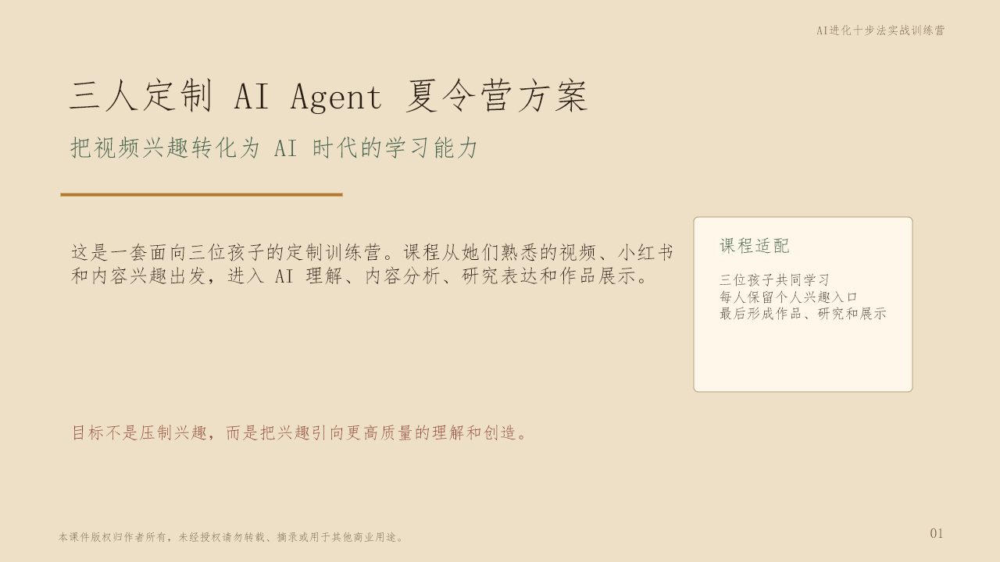
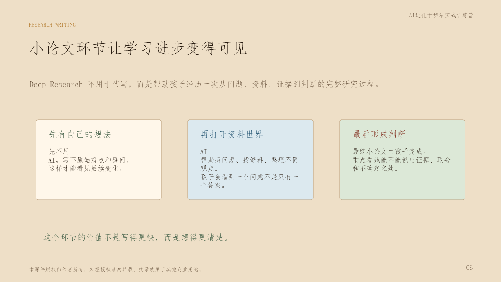
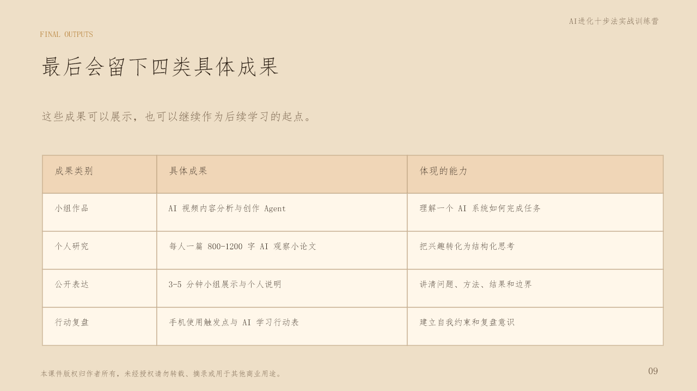

孩子熟悉短内容世界
知道什么好看、什么新奇、什么会让人停留，但还没有把直觉变成可解释的方法。
为什么做这个营
长期看视频真正值得担心的，不只是时间本身，而是注意力被内容牵着走。这个训练营把孩子已有的内容直觉，转化为对 AI Agent、推荐逻辑、内容系统和应用场景的主动探索。
知道什么好看、什么新奇、什么会让人停留，但还没有把直觉变成可解释的方法。
拆解视频为什么被推荐、为什么吸引人、AI 如何参与内容生成和判断。
不只是体验 AI 工具，而是留下作品、小论文、展示和复盘。
课程主线
课程不会堆工具名，而是围绕一个清晰闭环推进：把兴趣变成问题，把问题交给 AI 工具辅助研究，把研究转化为应用作品，再用自己的语言讲清楚。

三条定制路径
三人共同学习，但每个人保留个人兴趣入口，最后形成协作作品和个人成果。
结合家庭产业背景，理解海外用户画像、内容种草、品牌表达和产品介绍 Agent。
把账号经验转化为内容拆解、选题判断、爆款机制理解和 AI 创作助手。
从同伴视角观察视频平台功能、用户体验和内容反馈，承担展示与测试模块。
AI Agent 实战
孩子会理解一个 AI 系统如何接收信息、分析内容、生成方案、比较结果，并把过程讲清楚。
视频主题、账号方向、产品信息、目标用户。
内容钩子、用户兴趣、情绪表达、互动反馈。
选题、标题、脚本、封面建议和表达版本。
比较哪个方案更清楚、更可信、更适合目标用户。
用自己的语言讲清 AI 如何帮助完成任务。

Deep Research 小论文
Deep Research 不用于代写，而是帮助孩子经历一次从问题、资料、证据到判断的完整研究过程。这个环节的价值不是写得更快，而是想得更清楚。
先不用 AI，写下原始观点和疑问，保留前后变化。
用 AI 辅助拆问题、查资料、整理不同观点。
最终小论文由孩子完成，重点看证据、取舍和边界。
小论文方向
连接家庭产业背景与 AI 应用。
把账号经验转化为内容机制分析。
从同龄人视角讨论分心、自律和选择。
时间与地点
课程采用 3 天实战节奏：理解、构建、表达。具体日期与场地以最终确认安排为准。
从视频、小红书、TikTok 切入，理解推荐、内容结构和 AI Agent 的任务逻辑。
围绕真实内容场景，完成输入、分析、生成、评估的 Agent 流程。
完成研究表达、作品演示和行动复盘，让学习成果能够被清楚呈现。
最终成果
这些成果可以展示，也可以继续作为后续学习的起点。
AI 视频内容分析与创作 Agent。
每人一篇 AI 观察小论文或小研究报告。
3-5 分钟小组展示与个人说明。
手机使用触发点与 AI 学习行动表。

使用边界
不使用真实姓名、电话、住址、学校细节和家庭敏感信息，商业样例先做脱敏。
AI 是研究助教，不是替孩子写作业的人。孩子必须能解释自己的文章和作品。
AI 给出的资料和结论也要检查，不确定的地方要标出来。
V8.1 广州定制版
目标不是让孩子只带走一次新鲜体验，而是带走作品、研究、表达和继续探索 AI Agent 的方法。